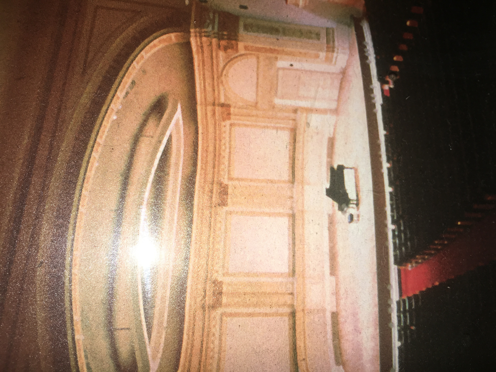

Concerts
2002 ~ Present:
- May 5th Columbia University hosted by the Iranian studies of Columbia University
- May 19th Concert at Great Neck North 8pm. Concert Sponsored by Great Neck Park District, Persian Cultural Committee and SHAI
- Tania Eshaghoff, Persian Class Music June 17-22 2006 Kosciuzko Foundation 15 East 65th Street NY, NY 10021
- Interview with Tania Eshaghoff on Radio Show WNYC 92.3FM 8pm Saturday July 22, 2006
- Concert Saturday, Oct 7, 2006 8pm LIMITED SEATS columbia University’s Miller Theater in New York City. Miller Theatre Box Office, 2960 Broadway, Columbia University, New York, NY 10027 (TEL: 212-854-7799)
- Persian Rhapsodies (March 2004)
- Tania Eshaghoff and Ensemble Review (October 2003)
- Tania Eshaghoff and Ensemble Review by Robert Abrams (October 2003)
- Tania Eshaghoff Review by George Preston (May 2003)
- Jewish Journal Review by Karmel Melamed (June 2007)
- March 17, 2005. An Evening of Original & Classic Compositions, Dowling College.
- Musical Tribute for Her Majesty Farah Pahlavi of Iran, LeFrak Concert Hall, Queens College, New York.
- Persian Rhapsody, April 4, 2004 – MAKOR at the 92 St Y
- Performances at the Center for Jewish History, Mar 3rd and Apr 3rd, Persian Rhapsodies review by Robert Abrams, March 3, 2004
- Tania performed at Symphony Space, NYC on October 11, 2003. Work commissioned and sponsored by the Iranian American Society.
- Persian Rhapsody, October 11, 2003 – Symphony Space, NYC
- May 2003 Tania was featured as a guest of George Preston’s edition of Overnight music from WNYC on May 23rd
- March 3, 2003 The Jew’s of Iran – Center for Jewish history
- April 2002 Recital at the Museum of the American Piano.
- November 2002 Intimate concert for the Ambassador of Syria, United Nations League at the residence of Former United Nations Journalist, Marilyn Widney.
- October 2002 Weil Recital Hall, Carnegie Hall, NYC,
- May 2002 The Ambassadors of the Middle East, United Nations League at residence of Former United Nations Journalist, Marilyn Widney.
- May 2000 Weil Recital Hall, Carnegie Hall, NYC
- QUEEN OF IRAN – FARAH PAHLAVI